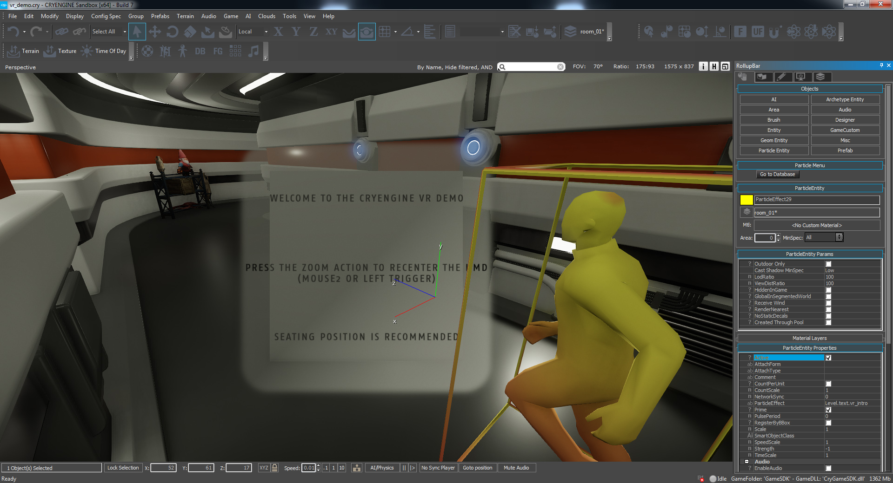
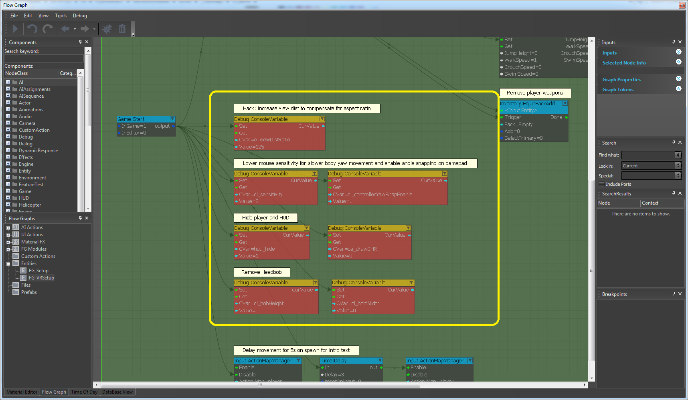
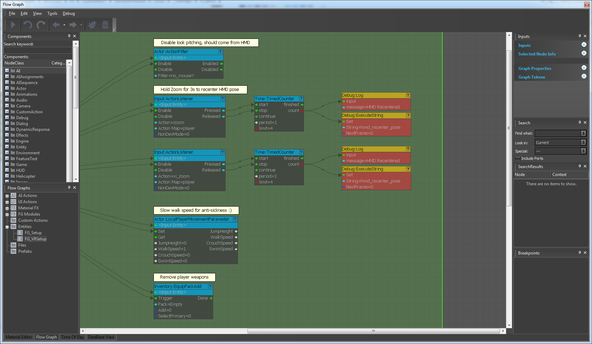
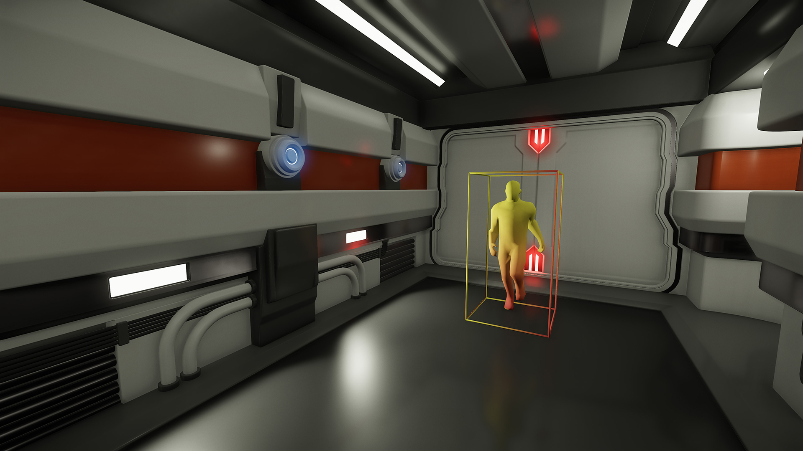
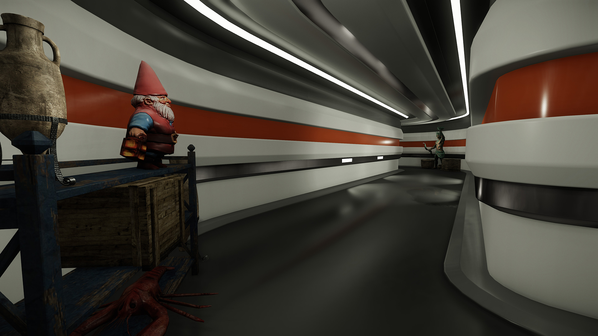
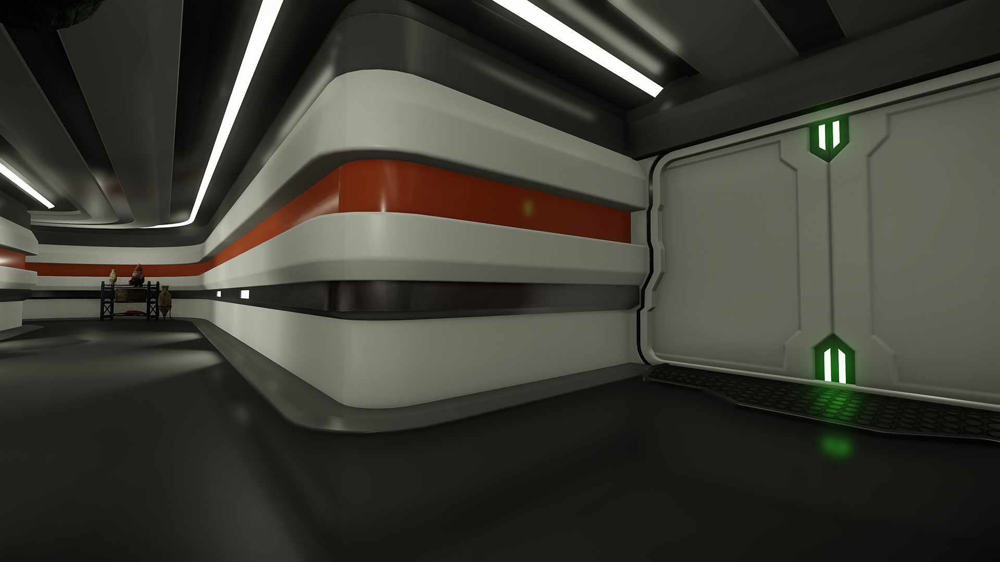
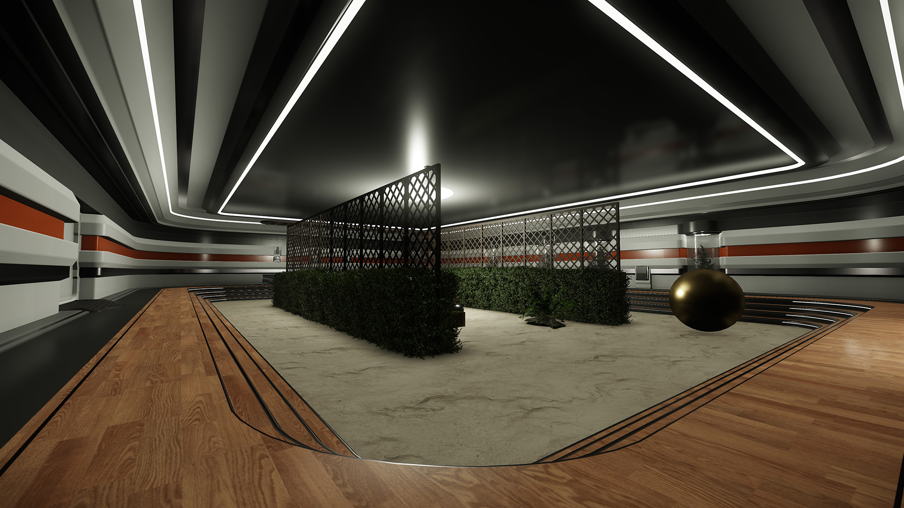
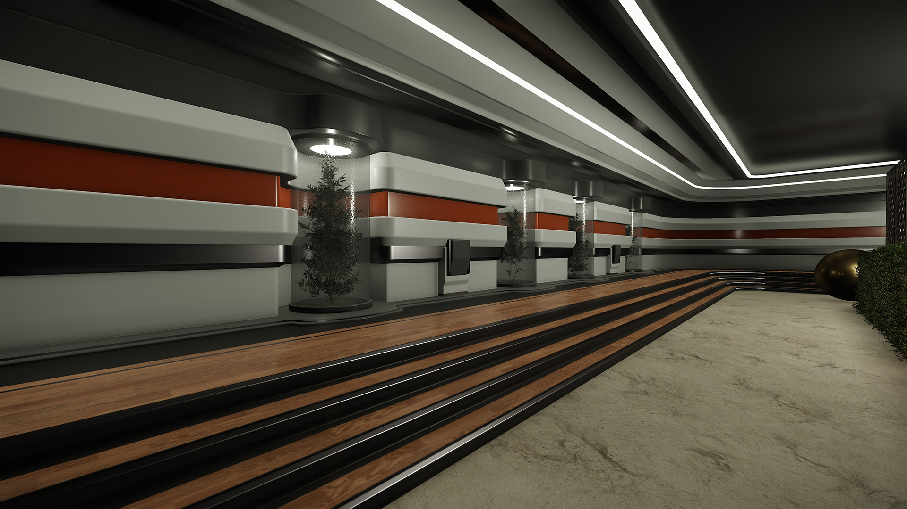
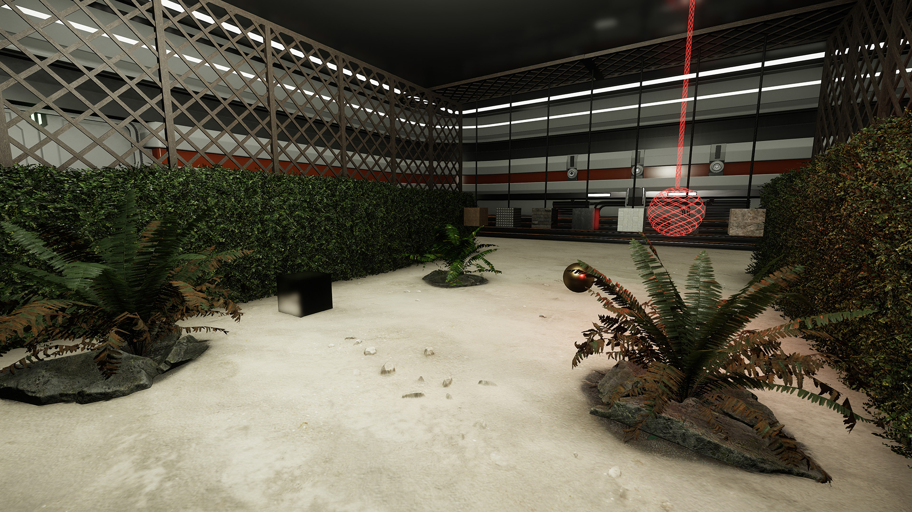
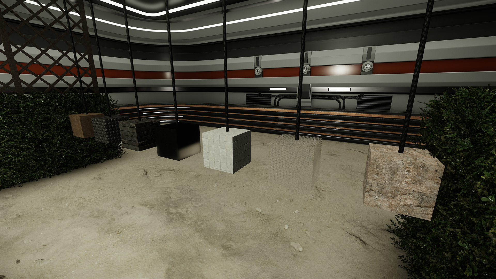

Overview
For CRYENGINE 3.8.1's VR integration, we put together a small test level for users to experience Virtual Reality at high frame rates and to try some basic immersion and interaction.
This level can be found in the folder: <Game_Folder>/levels/singleplayer/vr_demo
VR Setup
Open up the level in the Sandbox editor and then open up the Flowgraph Editor. Here we can see some of the changes being made in the level, specific to the VR setup.
Because we hide the HUD (3D HUD with VR goggles isn't quite compatible yet), we use a small camera-facing particle effect to give a little intro and some instructions on how to reset the HMD center pose. This particle is activated from a ProximityTrigger which the player spawns into. We also delay any player movement input for 3 seconds just to ensure the player has read the info before proceeding.

Next we trigger off several CVars to suit VR-specific needs:

- e_viewDistRatio is increased because there is an issue currently with aspect ratio (9:16 vs 16:9) and view distance culling.
- cl_sensitivity is lowered to prevent people from moving the mouse too fast and getting sick.
- cl_controllerYawSnapEnable is a new system to allow the gamepad joystick to snap by specified angles when turning, rather than a constant analogue turn.
- hud_hide to disable the 3D HUD, as mentioned earlier.
- ca_drawCHR hides the character and weapon. Your game will require a specific setup for your first person character to avoid clipping and odd results.
- cl_bobHeight/Width are disabled to help with motion sickness.
We have some additional changes also happening in this flowgraph:

- Actor:ActionFilter disables the mouse Y-axis input (also for gamepads) as pitching with an input device and the HMD can result in sickness.
- Input:ActionListener is listening for when the player holds Zoom (Mouse2 or Gamepad Left Trigger) in order to reset the HMD center position.
- Actor:LocalPlayerMovementParameter is lowering the speed of the player to help with motion sickness.
- Inventory:EquipPackAdd is giving the player the "Empty" equipment pack, to remove the standard weapons pack loaded by default.
Level Content

The level itself is fairly simple, consisting of a few modular hallway pieces, leading into a single, enclosed room. We start off with a small, enclosed space to let the player gain their bearings in VR before throwing them into a large area. Giving the player unique objects to focus on and to guide them forward is an important aspect of a VR level, remember that movement in VR is unfamiliar territory for most.

Once you proceed down the hallway you will come across a set of doors which will open automatically and gain you access into the main room.

The main room is an oval shape with a lowered sandpit in the center and only the one entry/exit point.
 
In the sandpit area you'll find some physicalized objects which you can interact with, either by walking into them or holding use (F on keyboard / X on gamepad) to grab them and then Fire (Mouse 1 / Right Trigger) to throw them.
 
We hope you enjoy this small glimpse of what Virtual Reality has to offer and some of the shiny new Sci-Fi content we're working on (though in this stage they're still very much WIP). There's a lot more to come